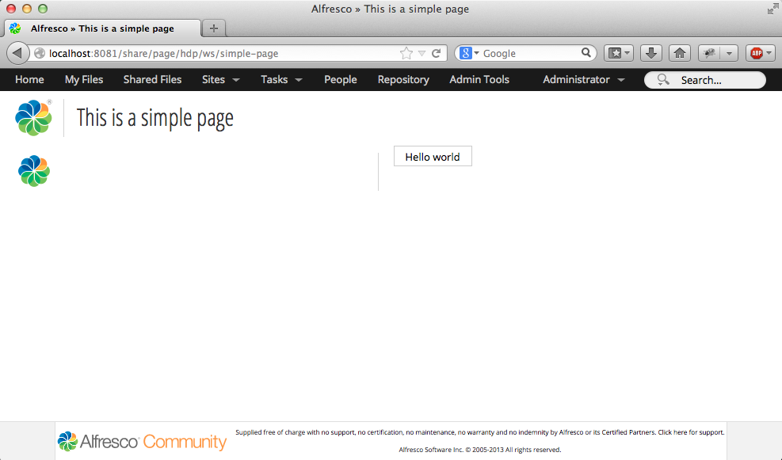

Working with the new Aikau framework in Alfresco Share 4.2
Ole Hejlskov
April 2014
License
This work is licensed under the Creative Commons Attribution-ShareAlike 4.0 International License. To view a copy of this license, visit http://creativecommons.org/licenses/by-sa/4.0/.

License
Introduction
Alfresco Share is a great front end for the Alfresco Repository. Out of the box it comes with full collaboration features, content management and pretty much what you would expect for a full blown Enterprise Content Management System.
Different users have different needs. Sometimes you'll want to add a few buttons, create a theme, but from time to time developers need to make significant user interface customizations to meet business requirements. Up until recent releases this would prove to be a challenge, and many developers chose to go down a different path and write a UI from scratch using a framework and language of their choosing. The new page and widget framework (Aikau) in Share provides a great way to do a complete custom interface, but keeps the code - and the users, within Share.
This tutorial assumes knowledge of the Alfresco Maven SDK, or an existing development setup. All examples in this tutorial are available with full source which can be built with Maven.
For a full tutorial on how to work with the Maven SDK, please see Jeff Potts' excellent tutorial on the subject.
Credits
A few people have helped getting this article done:
- Jeff Potts, for his encouragement and seal of approval
- Lanre Abiwon (DarkStar1), for going through the early drafts and contributions
- Magenta Aps, for allowing me to spend a bit of time at work on this article
And of course all of the members of the Alfresco Community!
Setup
To make sure everyone can understand and relate to the code in this tutorial, here is a description of the tools used for building these examples, and the file structure within the examples.
Tools
- Mac OS X 10.9.1
- Maven 3.1.1 (Installed with Homebrew)
- Java 1.7.0_51
- Alfresco Maven SDK 1.1.1
- Alfresco 4.2.f
File structure
The Maven SDK will provide us with the initial directory structure, which contains some sample data. For all examples in this tutorial the sample data has been removed, and the src/main/amp/config/alfresco/web-extension folder has been added, as well as the src/main/amp/file-mapping.properties file.
The skeleton looks like this:
File structure
Here are some notes on what goes where
| File | Description |
|---|---|
src/main/amp/config/alfresco/web-extension |
share-config-custom.xml, and other customization XML-files |
src/main/amp/web |
Static assets, Javascript, CSS, Images etc. |
src/main/java |
Java classes |
src/test |
Test resources, Unit tests etc |
Running the examples
Clone the code from Github (LINK), make sure you have an Alfresco instance running on port 8080, enter the share-widget-tutorial folder and run the following command:
mvn integration-test -Pamp-to-warThis will build an AMP file, then apply the amp to the Share war-file and startup an embedded Tomcat instance. Normally Tomcat will run on the default port 8080, but for since Alfresco is already running on that port, we need to change this. This can be done either by giving the port number as an argument to Maven, or defined in the pom.xml as the example in this tutorial.
The Tomcat port number is defined in pom.xml with the following XML:
<maven.tomcat.port>8081</maven.tomcat.port>With this in place, Tomcat will run on port 8081.
Once Tomcat has started Share is is accessible on http://localhost:8081/share
To shut down it down, simply hit CTRL+C.
Part One: Creating a page
Share is a great frontend for Alfresco, but sometimes it doesn't meet a specific business requirement. A common use case is the need for a complete separate page display custom metadata on a set of nodes, where the built in search or repository browser isn't enough. Many people end up wirting separate applications outside Share to meet these requirements, because there is a lot of work involved in making a custom page in Share.
If you worked with Share in the past, you may be familiar with the Surf Framework. Defining a page using Surf requires template instances, regions, and components. Using the new widget framework, a single web script defines a page. This makes it much easier to develop custom pages that meets all business requirements, while still keeping the users inside the Share application.
This chapter will focus on how to create a custom page in Share with a single web script, go through the JSON model that is used to setup the widgets on the page.
Create the page
Let's create a page named "Simple page", with a "Hello World" button. Create a new web script "simple-page", like this:
simple-page.get.desc.xml
<webscript>
<shortname>Simple Page</shortname>
<description>Simple page definition</description>
<family>Share</family>
<url>/simple-page</url>
</webscript> simple-page.get.html.ftl
<@processJsonModel group="share"/>simple-page.get.js
model.jsonModel = {
widgets: [{
name: "alfresco/buttons/AlfButton",
config: {
label: "Hello world!"
}
}]
};Place these three files in src/main/amp/config/alfresco/web-extension/site-webscripts/com/example/pages.
Start up Share via Maven with this command:
mvn integration-test -Pamp-to-warNavigate to http://localhost:8081/share/page/dp/ws/simple-page to see the result, which looks like this:
Simple page with a widget
A closer look
The example above is the basic setup of a page with the new page model. Let's review what we just did.
The web script defines a JSON model for a page. The JSON model consists of widgets with a configuration. In this example we defined a single button-widget with a simple configuration which defines the label of the button.
Widgets can be nested (if the widget supports it). This could be used to define the overall layout of the page, or a simple widget to split widgets up into columns. Share provides a number of layout widgets, for example sidebar container, left-and-right, tabs, vertical/horizontal etc. Since there is yet to be proper documentation on this, all widgets can be found in the source for Share.
The freemarker template is really simple, it calls the @processJsonModel macro, which takes care of rendering everything.
Where is the Share header and footer?
After seeing the first example, the obvious question would be how to add the Share header and footer. Luckily this is not something you need to define manually.
Share enables you to render pages in different contexts, which means the URL will determine how the page is rendered. Notice the URL http://localhost:8081/share/page/dp/ws/simple-page. Notice /dp/ws/simple-page.
The first part "dp" defines that we want a dynamic page. This will render the page in a stand-alone manner, useful for embedding the page into other applications, or creating a complete custom interface for specific needs but still in the Alfresco/Share ecosystem.
The second part "ws" means that we want to load the page from a web script. It's possible to remote load the pages from the repository, that way we can create pages and store them within Alfresco and have them rendered.
To add the Share header and footer simply switch the "dp" with "hdp": http://localhost:8081/share/page/hdp/ws/simple-page
The result looks like this: 
Adding a title next to the logo
The Share header widget is currently (as of 4.2.f) the only component in Share using the new Aikau framework. The header includes the menu bar, search, logo and title. If we wish to add a title next to the logo, we'll need to define a title widget, which Share will take into account when rendering it with the header. If the page is rendered without the header, it simply ignores the widget.
To add the title to our simple page, modify the JSON model and add the title:
model.jsonModel = {
widgets: [{
id: "SET_PAGE_TITLE",
name: "alfresco/header/SetTitle",
config: {
title: "This is a simple page"
}
},
{
name: "alfresco/buttons/AlfButton",
config: {
label: "Hello world!"
}
}]
};After restarting Share, the result looks like this: 
Adding a layout
To add a simple horizontal layout we can use the alfresco/layout/HorizontalWidgets widget, which makes it possible to horizontally align widgets and define their width in percentages.
The JSON model in src/main/amp/config/alfresco/web-extension/site-webscripts/com/example/pages/simple-page.get.js should look like this:
model.jsonModel = {
widgets: [{
id: "SET_PAGE_TITLE",
name: "alfresco/header/SetTitle",
config: {
title: "This is a simple page"
}
},
{
id: "MY_HORIZONTAL_WIDGET_LAYOUT",
name: "alfresco/layout/HorizontalWidgets",
config: {
widgetWidth: 50,
widgets: [
{
name: "alfresco/logo/Logo",
config: {
logoClasses: "alfresco-logo-only"
}
},
{
name: "alfresco/buttons/AlfButton",
config: {
label: "Hello world"
}
}
]
}
}]
};The result looks like this: 
Notice how the widgets are nested inside each other. The HorizontalWidgets has a config object with a list of widgets with their own properties. The configuration includes a parameter for the horizontal widget widgetWidth: 50 which defines the percentage width each widget should recieve.
The built-in widgets
As mentioned above, the only component in Share (as of 4.2.f) using the new Aikau framework is the header. However, this does not mean that we're limited to logo, buttons and drop downs.
The good folks at Alfresco are working hard on converting the Document Library to use the Aikau framework. This means that there are a lot of widgets in the library that can be use right now.
Take a look at the Share source to see see all the existing widgets.
There are widgets for loading up nodes, rendering properties, buttons, menus, forms, dialogs, selectors for users, nodes, categories and much, much more.
Not all widgets are production ready, but they are excellent examples to look at, and to get inspiration from. Use them as a reference on good practises on writing good and generic widgets.
Part Two: Introduction to widgets
Using the existing widgets in Share provides a lot of features, but when developing a custom page, custom widgets are usually needed. Also to fully understand, use and extend the existing widgets we need to look at how widgets are created.
This chapter will focus on how to write widgets and provide examples on how to utilize templates, i18n, css and Ajax.
YUI, Dojo and AMD
Up until now, Share has been built on top of the YUI2 framework and almost all of the current features in Share still use YUI2.
Share will eventually move away from YUI2 as it is not being developed anymore, and there is no clear upgrade path from YUI2 to YUI3, so Alfresco had to make a decision, and chose to go with Dojo's AMD Module system.
The Aikau framework relies on Dojo's AMD Module system, to provide features for loading and extending widgets.
This does not mean that Alfresco is switching away from YUI and forcing users into Dojo.
Most of Share's future core modules will be based on Dojo, but this does not mean developers needs to learn and use Dojo for everything. However a bit of AMD knowledge will be needed, which defines is what defines widget and their dependencies. That's it. Once AMD is in place, it's up to the developers to load up another framework or use vanilla Javascript.
Creating a simple widget
Let's create a really simple widget on a new page. The widget will not do much, other than do an alert with "Hello world". Let's start out with the code, see that it works and then go into the details.
First we need to create the widget. Create this file src/main/amp/web/js/example/widgets/MyWidget.js
define(["dojo/_base/declare",
"dijit/_WidgetBase",
"alfresco/core/Core"
],
function(declare, _Widget, Core) {
return declare([_Widget, Core], {
postCreate: function example_widgets_MyWidget__postCreate() {
this.inherited(arguments);
alert("Hello world!");
}
});
});Once the widget is created, create a new web script to define the new page:
src/main/amp/config/alfresco/web-extension/site-webscripts/com/example/pages/custom-widget-page.get.desc.xml:
<webscript>
<shortname>Custom Widget Page</shortname>
<description>Page with custom widget</description>
<family>Share</family>
<url>/custom-widget-page</url>
</webscript>Add a Freemarker template to render the page: src/main/amp/config/alfresco/web-extension/site-webscripts/com/example/pages/custom-widget-page.get.html.ftl:
<@processJsonModel group="share"/>Add the JSON file: src/main/amp/config/alfresco/web-extension/site-webscripts/com/example/pages/custom-widget-page.get.js:
model.jsonModel = {
widgets: [{
id: "SET_PAGE_TITLE",
name: "alfresco/header/SetTitle",
config: {
title: "This is a simple page"
}
},
{
name: "example/widgets/MyWidget"
}]
};The last thing that needs to be done is to tell Share about the path for the widget, otherwise it will not know where to look for it. This is done by creating an extension module for Share. Create the module in this file src/main/amp/config/alfresco/web-extension/site-data/extensions/widget-extension.xml:
<extension>
<modules>
<module>
<id>Tutorial widgets</id>
<version>1.0</version>
<auto-deploy>true</auto-deploy>
<configurations>
<config evaluator="string-compare" condition="WebFramework" replace="false">
<web-framework>
<dojo-pages>
<packages>
<package name="example" location="js/example"/>
</packages>
</dojo-pages>
</web-framework>
</config>
</configurations>
</module>
</modules>
</extension>Restart share and visit http://localhost:8081/share/page/dp/ws/simple-page to see the result.
Breaking down the widget code
A lot of code was involved in creating the widget. We had to create a new web script, an extension module and the widget. Let's look at each part to understand what's going on.
Loading dependencies
If you have worked with Javascript in general, you'll notice a few things. We haven't included any Javascript files and there is no initialization of the widget object. This is because everything is handled by the Surf framework which powers Share. By defining our extension module, we told Share where to find the javascript files, and by defining our widget in the JSON model it knows how to initialize it.
When processing the JSON page model, Share will identify which widgets needs to be included to render the page. It knows by the name attribute roughly where to look for it, but we didn't specify any extension to the file, or absolute path.
Share registers a list of packages to include - a kind of namespace. This is done in WEB-INF/surf.xml with this sniplet of XML:
<packages>
<package name="dojo" location="js/lib/dojo-1.9.0/dojo"/>
<package name="dijit" location="js/lib/dojo-1.9.0/dijit"/>
<package name="dojox" location="js/lib/dojo-1.9.0/dojox"/>
<package name="alfresco" location="js/alfresco"/>
</packages>
The packages has a name and a location. So by referencing alfresco/[folder]/[widget] in the JSON model, Share will look for the file in WEB-INF/js/alfresco/[folder]/[widget].js.
However it is always good practise to create a custom namespace to avoid conflicts in the code, so we added a new package in the extension module, which tells Share that when referencing example/[folder]/[widget] it will include WEB-INF/js/example/[folder]/[widget].js.
Now Share knows how to locate the widget files, it will run it through it's internal dependency aggregation and caching. Our widget might depend on other widgets, and those widgets might depend on other widgets. This will create a complex matrix of dependencies to load, but Surf is smart enough to only include the dependencies we need - and it will only include them once.
The <@processJsonModel group="share"/> macro in the Freemarker template triggers the process of resolving the dependencies and rendering everything from including the scripts to the initialization of the widget.
Defining and declaring a widget
This is not an Alfresco specific thing - it's purely Dojo and AMD. Since Surf already pre-processed and initialized our widget, Share will already have taken care of loading all the resources we need. One less thing to worry about!
The first lines of any widget consists of a definition of dependencies:
define(["dojo/_base/declare",
"dijit/_WidgetBase",
"alfresco/core/Core"
]
This defines that we need to include the declare feature, WidgetBase and an Alfresco core widget.
The next line returns a declaration of our widget:
function(declare, _Widget, Core) {
return declare([_Widget, Core], {
});
}This might be a bit complex to read and understand, so let's spend some more time on it.
We create a function, which will take "declare", "_Widget" and "Core" as arguments. The order of the arguments has to be the exact same as the definitions above, as they will be passed into this function.
So first we define our dependencies, then create a function which takes these dependencies in as arguments.
Inside this function, we call the declare function, which is an AMD specific function. The declare function allows us to inherit and extend other AMD modules, so in our case we extend the Dojo _WidgetBase and Alfresco's Core module.
This will provide us with the basic framework, after that we can start defining our widget object.
So if we wanted to extend alfresco/buttons/AlfButton we would simply define the module and add it to the list of modules we extend like this:
define(["dojo/_base/declare",
"dijit/_WidgetBase",
"alfresco/core/Core",
"alfresco/buttons/AlfButton"
],
function(declare, _Widget, Core, AlfButton) {
return declare([_Widget, Core, AlfButton], {
/* Our code goes here */
});
}
}); This way we can extend the standard button and modify it.
Notice that the function definition and return statements are two different, separate things. The function arguments, are the dependencies we request with the define statement. The return declare([]) defines which objects we want to extend. We do not always want to extend other objects, but only make them available in in the object. One example of this could be if we wanted Dojo's array features. We would define them as a dependency, make them available in the function, but we do not want to extend the object. This example shows how to include the array features:
define(["dojo/_base/declare",
"dijit/_WidgetBase",
"alfresco/core/Core",
"dojo/_base/array",
],
function(declare, _Widget, Core, AlfButton, array) {
return declare([_Widget, Core, AlfButton], {
var list = [1,2,3];
array.forEach( list, function(x) {
console.log(x);
});
});
}
}); Notice that dojo/_base/array was only defined and passed in as an argument to our widget, we did not extend the array object.
Beyond a "Hello world"
Now that we know a lot more about how a widget is written, let's look at a some more examples. This example will feature the Templated module, which enables you to specify a HTML template for your widget, bind values to it and access it from within the widget. We'll also have a look at the basic DOM-operations Dojo supplies. Last but not least, we'll look at the CoreXhr module for doing Ajax as well as utilizing i18n and CSS.
Templates, CSS and I18N
Dojo provides a template system for widgets, called Templated. This module will allow us to create HTML templates and manipulate them. We'll be able to bind events and elements directly to our widget for future reference. This way we can create the basic structure directly in HTML and hook into it from our widget.
To use the Templated module, the widget need to define the dijit/_TemplatedMixin module, and specify a path and name for the template, like this: dojo/text!./templates/TemplateWidget.html. The path is relative to the widget's location. The widget also need to extend the Templated module with the declare feature discussed earlier.
Let's look at an example. Create a new file in src/main/amp/web/js/example/widgets/templates/TemplateWidget.html with some HTML:
<div class="my-template-widget">${greeting}</div>Then a new widget in src/main/amp/web/js/example/widgets/TemplateWidget.js:
define(["dojo/_base/declare",
"dijit/_WidgetBase",
"alfresco/core/Core",
"dijit/_TemplatedMixin",
"dojo/text!./templates/TemplateWidget.html"
],
function(declare, _Widget, Core, _Templated, template) {
return declare([_Widget, Core, _Templated], {
templateString: template,
buildRendering: function example_widgets_TemplateWidget__buildRendering() {
this.greeting = "Hello!";
this.inherited(arguments);
}
});
});This widget will render the template, and replace the variable with the string "Hello". Notice that we're overriding the buildRendering method from the Templated module. This method is in charge of rendering the template and setting up the DOM correctly, so it's important to call the original method to ensure everything will work out, this is done by calling this.inherited(arguments).
The Templated module also takes care of binding together the variables, so once a variable has been defined in the template, like this ${greeting}, it can accessed and modified directly in the widget within the buildRendering method. This is useful for setting up labels and headings with translations. Notice that the variables can only be modified from the buildRendering method.
This was a basic example of using the Templated module, we'll see more of this later. Let's add i18n and load a CSS file.
i18n works exactly like you'd expect, you create properties files like you do for web scripts. Create the i18n file src/main/amp/web/js/example/widgets/templates/i18n/TemplateWidget.properties. Multiple languages can be supported by adding a prefix to the filename, like TemplateWidget_en.properties.
Let's move our greeting into the properties file:
hello-label=Hello from i18nAll that's left to do now, is to load up the i18n file by setting the i18nRequirements property and call this.message() to grab the label out of the translation system. Everything else is taken care of by the Aikau framework.
With the translations done, let's add a CSS file src/main/amp/web/js/example/widgets/css/TemplateWidget.css:
.my-template-widget {
border: 1px #000000 solid;
padding: 1em;
width: 100px;
}Once the CSS file is in place, add the cssRequirements property and point it to the CSS file. The final code looks like this:
define(["dojo/_base/declare",
"dijit/_WidgetBase",
"alfresco/core/Core",
"dijit/_TemplatedMixin",
"dojo/text!./templates/TemplateWidget.html"
],
function(declare, _Widget, Core, _Templated, template) {
return declare([_Widget, Core, _Templated], {
templateString: template,
i18nRequirements: [ {i18nFile: "./i18n/TemplateWidget.properties"} ],
cssRequirements: [{cssFile:"./css/TemplateWidget.css"}],
buildRendering: function example_widgets_TemplateWidget__buildRendering() {
this.greeting = this.message('hello-label');
this.inherited(arguments);
}
});
});Add the widget to the custom-widget-page.get.js JSON model:
model.jsonModel = {
widgets: [{
id: "SET_PAGE_TITLE",
name: "alfresco/header/SetTitle",
config: {
title: "This is a simple page"
}
},
{
name: "example/widgets/MyWidget"
},
{
name: "example/widgets/TemplateWidget"
}]
};Restart Share, and access http://localhost:8081/share/page/hdp/ws/custom-widget-page to see the result.
Ajax
Alfresco provides a CoreXhr module, which enables us to do Ajax calls. This module is fairly easy to use. We simply define alfresco/core/CoreXhr as a dependency and extend it, and then we can call this.serviceXhr to do GET/POST/PUT/DELETE operations against Alfresco. The serviceXhr method takes an object of parameters with parameters like, URL, method (GET/POST etc), and callback methods for success/failure.
Here is an example on how to use the CoreXhr module:
define(["dojo/_base/declare",
"dijit/_WidgetBase",
"alfresco/core/Core",
"alfresco/core/CoreXhr"
],
function(declare, _Widget, Core, CoreXhr) {
return declare([_Widget, Core, CoreXhr], {
postCreate: function example_widgets_AjaxWidget__postCreate() {
var url = Alfresco.constants.PROXY_URI + "slingshot/doclib/treenode/node/alfresco/company/home";
this.serviceXhr({url : url,
method: "GET",
successCallback: this._onSuccessCallback,
callbackScope: this});
},
_onSuccessCallback: function example_widgets_AjaxWidget__onSuccessCallback(response, config) {
console.log(response);
}
});
});If we want to do a POST operation, we usually want to provide some data to go along with it, the object we pass to the serviceXhr method takes in a few parameters, so we add a data value in the object with our data for the POST operation. Unfortunately there is not much (if any) documentation on this just yet, but by looking at the code the default options we can modify look like this:
var config = {
handleAs: "text",
method: "POST",
data: null,
query: null,
headers: { "Content-Type": "application/json" },
successCallbackScope: this,
successCallback: this.defaultSuccessCallback,
failureCallbackScope: this,
failureCallback: this.defaultFailureCallback,
progressCallbackScope: this,
progressCallback: defaultProgressCallback,
alfTopic: null
};The callbacks will get two arguments, the response and the config used for the request.
DOM helpers and modules
Since this article is not about Dojo, we won't go too much in depth with this subject. Dojo comes with modules for manipulating DOM, which we will see in the later examples by using domConstruct to create DOM nodes and attach them with attach points in our template.
domConstruct enables us to create DOM nodes, and if we want, we can easily inject them into our templates with attach points.
Attach points links nodes from our template into our widget, so we do not have to do queries for the nodes. Attach points is defined by setting a data attribute on the element we wish to attach to our widget and after that we can access the DOM node directly like this this.containerNode. The template would look like this:
<div data-dojo-attach-point="containerNode"></div>Here is an example on how to use domConstruct to create a new node inside containerNode with a text:
define(["dojo/_base/declare",
"dijit/_WidgetBase",
"alfresco/core/Core",
"dojo/dom-construct",
"dijit/_TemplatedMixin",
"dojo/text!./templates/TemplateWidget.html"
],
function(declare, _Widget, Core, domConstruct, _Templated, template) {
return declare([_Widget, Core, _Templated], {
templateString: template,
postCreate: function example_widgets_TemplateWidget__postCreate () {
domConstruct.create( "div", { innerHTML: "Hello" }, this.containerNode );
}
});
});To get a full picture of working with DOM in Dojo here is a list of recommended reading material:
Bringing it all together
Let's build a widget that combines everything we've read so far. The advanced widget will use a template, it will have a CSS file and use i18n. It will do an Ajax call to get all nodes in Company Home and use the domConstruct module to populate a table with the data.
All this example code can be found in the part-two directory of the tutorial source code.
The template is pretty simple, we define a table, variables for column headers, and a tbody with an attach-point so we can access it from the widget:
src/main/amp/web/js/example/widgets/templates/AjaxWidget.html
<div class="ajax-widget">
<h1>${widgetTitle}</h1>
<table>
<thead>
<tr>
<th>${columnName}</th>
<th>${columnDescription}</th>
</tr>
</thead>
<tbody data-dojo-attach-point="containerNode"></tbody>
</table>
</div>We'll also need a i18n file to enable translations of our widget:
src/main/amp/web/js/example/widgets/i18n/AjaxWidget.properties
widgetTitle=Nodes found in Company Home
columnName=Name
columnDescription=DescriptionLast but not least, the widget itself:
src/main/amp/web/js/example/widgets/AjaxWidget.js
define(["dojo/_base/declare",
"dijit/_WidgetBase",
"alfresco/core/Core",
"alfresco/core/CoreXhr",
"dojo/dom-construct",
"dojo/_base/array",
"dijit/_TemplatedMixin",
"dojo/text!./templates/AjaxWidget.html"
],
function(declare, _Widget, Core, AlfCoreXhr, domConstruct, array, _Templated, template) {
return declare([_Widget, Core, AlfCoreXhr, _Templated], {
templateString: template,
cssRequirements: [{cssFile:"./css/AjaxWidget.css"}],
i18nRequirements: [ {i18nFile: "./i18n/AjaxWidget.properties"} ],
buildRendering: function example_widgets_AjaxWidget__buildRendering() {
this.widgetTitle = this.message('widgetTitle');
this.columnName = this.message('columnName');
this.columnDescription = this.message('columnDescription');
this.inherited(arguments);
},
postCreate: function example_widgets_AjaxWidget__postCreate() {
var url = Alfresco.constants.PROXY_URI + "slingshot/doclib/treenode/node/alfresco/company/home";
this.serviceXhr({url : url,
method: "GET",
successCallback: this._onSuccessCallback,
callbackScope: this});
},
_onSuccessCallback: function example_widgets_AjaxWidget__onSuccessCallback(response, config) {
if (response.totalResults != undefined && response.totalResults > 0) {
var parentNode = this.containerNode;
array.forEach( response.items, function(item) {
var row = domConstruct.create( "tr", {}, parentNode );
domConstruct.create( "td", { innerHTML: item.name }, row);
domConstruct.create( "td", { innerHTML: item.description }, row);
});
}
}
});
});Create a new web script ajax-page that defines a page with the widget:
src/main/amp/config/alfresco/web-extension/site-webscripts/com/example/pages/ajax-page.get.desc.xml
<webscript>
<shortname>Ajax Page</shortname>
<description>Ajax page with a bit of DOM</description>
<family>Share</family>
<url>/ajax-page</url>
</webscript>src/main/amp/config/alfresco/web-extension/site-webscripts/com/example/pages/ajax-page.get.html.ftl
<@processJsonModel group="share"/>src/main/amp/config/alfresco/web-extension/site-webscripts/com/example/pages/ajax-page.get.js
model.jsonModel = {
widgets: [{
id: "SET_PAGE_TITLE",
name: "alfresco/header/SetTitle",
config: {
title: "This is an advanced page with Ajax and DOM operations"
}
},
{
name: "example/widgets/AjaxWidget"
}]
};The end result looks like this: 
If we break it down a bit, there really is not much to it. We pull in the dependencies we need: CoreXhr, dom-construct, array and TemplatedMixin. We also specify the template, css and i18n files.
The buildRendering method sets up the template with i18n, postCreate does an Ajax call to Alfresco.constants.PROXY_URI + "slingshot/doclib/treenode/node/alfresco/company/home" to get a list of all nodes in "Company Home", and uses the _onSuccessCallback method to do the actual rendering.
In the _onSuccessCallback method we check that we actually got results, then catch the containerNode attach-point from the template, loop the reulsts and constructs a row with two columns for each result.
Inter-widget communication
Now that we know how to setup a page, build a widget and do various basic things with it (templates, i18n, Ajax etc), the next step is to build a full blown page with lots of widgets. Having a page with single serving widgets is fine, but we will quickly need to have the widgets communicate and trigger different actions across the whole page. But how can widgets communicate with each other? They're completely separate and decoupled, and that's a good thing.
The Aikau framework introduces a publication/subscription system which in many aspects works like the old YUI2 Bubbling system. The idea is that we have a "channel" where you broadcast information in, and we setup widgets to subscribe on a channel and act upon the information.
This could allows us to create a navigation widget where nodes can be selected. The navigation widget is only responsible for fetching the node, the rendering of the node is handled by another widget. Think about the document library for a moment, where there is a left menu that allows us to navigate the folder structure, and the content area is responsible for rendering the contents of the folder. In the document library the left menu fetches and renders a list of folders, but once you click a folder it also broadcasts information to the content area that listens in and renders the folder contents once it's been received.
Let's skip the metaphor, because when we're looking at the code the terminology is a bit different. The channels are called topics and the information being broadcast is a payload, which could be anything, but usually it will be a JSON object. Once we extend alfresco/core/Core we inherit two methods: alfPublish and alfSubscribe, which allows us to publish and subscribe to a topic. A topic is simply a string so we have something to identify it by. The alfPublish method takes the topic as the first argument, followed by the payload like this:
this.alfPublish("MY_TOPIC", "my payload");The payload can either be a plain string, or you can pass objects directly like this:
this.alfPublish("MY_TOPIC", {nodes: [{name:"node1"}, {name: "node2"}]});To subscribe to a topic we use the alfSubscribe method, which takes the topic as the first argument, followed by a callback to act on the payload:
this.alfSubscribe(this.TutorialTopic, function(payload) {
console.log(payload);
});Sometimes we don't want to have all our subscription logic inside a closure, in these cases we can use Dojo's lang.hitch method, to connect the subscription with a method on our object:
define(["dojo/_base/declare",
"dijit/_WidgetBase",
"alfresco/core/Core",
"dojo/_base/lang",
],
function(declare, _Widget, Core, lang) {
return declare([_Widget, Core], {
postCreate: function () {
this.alfSubscribe("MY_TOPIC", lang.hitch(this, "_onPayloadReceive"));
},
_onPayloadReceive: function (payload) {
console.log(payload);
}
});
});One last thing to note, is that whenever we receive a JSON object as a payload, the topic will be added to the object as the key alfTopic. A simple JSON object like {nodes: []} published to "MY_TOPIC" will become {alfTopic: "MY_TOPIC", nodes: []}. This is useful to identify where the payload originated from.
This is the very basic idea behind the pub/sub system, so when it comes down to it, there really isn't much to it, however it gives the widgets so much power.
A basic Pub/Sub example
Let's create a very simple page with two widgets. The first widget will have a textarea for inputting a payload and a button. Once the button is clicked, it publishes the value from the textarea to a topic. Next to the input widget there will be a widget that subscribes to the topic and puts it on the page.
Create a new web script pub-sub that defines a page with the widget:
src/main/amp/config/alfresco/web-extension/site-webscripts/com/example/pages/pub-sub.get.desc.xml
<webscript>
<shortname>Publish-Subscription page</shortname>
<description>Example on using pub/sub with widgets</description>
<family>Share</family>
<url>/pub-sub-example</url>
</webscript>src/main/amp/config/alfresco/web-extension/site-webscripts/com/example/pages/pub-sub.get.html.ftl
<@processJsonModel group="share"/>src/main/amp/config/alfresco/web-extension/site-webscripts/com/example/pages/pub-sub.get.js
model.jsonModel = {
widgets: [{
id: "SET_PAGE_TITLE",
name: "alfresco/header/SetTitle",
config: {
title: "Pub/sub example"
}
},
{
name: "alfresco/layout/HorizontalWidgets",
config: {
widgetWidth: 50,
widgets: [
{
name: "example/widgets/InputWidget"
},
{
name: "example/widgets/RenderWidget"
}
]
}
}]
};This example uses the alfresco/layout/HorizontalWidgets layout widget to put the two widgets next to each other.
A simple Mixin for constants
We have to be careful when handling topics. If we hardcode the topic name into each file, things starts to get messy. To solve this, we create a very simple object that defines a kind of constant with the topic name. This way we can pull in the topic mixin and reference them instead. The topics mixin looks like this:
src/main/amp/web/js/example/widgets/_TopicsMixin.js
define(["dojo/_base/declare"],
function(declare) {
return declare(null, {
TutorialTopic: "ALFRESCO_TUTORIAL_TOPIC"
});
});To use the mixin we simply define and declare the object, this way we extend it, and we can reference the topic name with this.TutorialTopic instead of hardcoding the topic into each file.
For a very simple example like this, it might seem a bit overkill. However, when developing a big and complex matrix of widgets, we'll be grateful to have this.
InputWidget
For the InputWidget we'll use a few tricks to create a textarea and a button. First of all we need a simple template with a few attach points so we can place elements on the page:
src/main/amp/web/js/example/widgets/templates/InputWidget.html
<div class="tutorial-input-widget-container">
<span data-dojo-attach-point="inputTopicNode"></span>
<span data-dojo-attach-point="publishTopicNode"></span>
</div>To create a widget ad-hoc from within our widget, we simple define the widgets and initialize them as normal objects:
this.textArea = new DojoTextarea({
label: this.message("inputWidget.inputLabel")
});Once we have initialized the DojoTextArea widget, we can use the placeAt method to have the widget rendered at an attach point in the template. The complete InputWidget looks like this:
src/main/amp/web/js/example/widgets/InputWidget.js
define(["dojo/_base/declare",
"dijit/_WidgetBase",
"alfresco/core/Core",
"dojo/_base/lang",
"alfresco/buttons/AlfButton",
"alfresco/forms/controls/DojoTextarea",
"alfresco/tutorial/_TopicsMixin",
"dijit/_TemplatedMixin",
"dojo/text!./templates/InputWidget.html"
],
function(declare, _Widget, Core, lang, AlfButton, DojoTextarea, _TopicsMixin, _Templated, template) {
return declare([_Widget, Core, _Templated, _TopicsMixin], {
templateString: template,
i18nRequirements: [ {i18nFile: "./i18n/PubSub.properties"} ],
postCreate: function example_widgets_InputWidget__postCreate() {
this.inherited(arguments);
this.textArea = new DojoTextarea({
label: this.message("inputWidget.inputLabel")
});
this.textArea.placeAt(this.inputTopicNode);
var btn = new AlfButton({
label: "Publish",
onClick: lang.hitch(this, '_onPublish')
});
btn.placeAt(this.publishTopicNode);
},
_onPublish: function example_widgets_InputWidget__onPublish() {
this.alfPublish(this.TutorialTopic, this.textArea.getValue());
}
});
});The code is straight forward, create a DojoTextarea and a AlfButton. Hitch the _onPublish method to the onClick event on the button, and place them in the template. Once the button is clicked, we publish the value of the textarea to the topic.
RenderWidget
For the render widget we also need a simple template with an attach point so we can display the value. The template look like this:
src/main/amp/web/js/example/widgets/templates/RenderWidget.html
<div class="tutorial-input-widget-container">
<b>${renderWidgetHeading}</b>
<span data-dojo-attach-point="payloadContainer"></span>
</div>The widget itself is also easy, it pulls in TopicsMixin, setup the template with some i18n. It also subscribes to the topic, once it receive something it uses domConstruct to create a <p> element with the text.
src/main/amp/web/js/example/widgets/RenderWidget.js
define(["dojo/_base/declare",
"dijit/_WidgetBase",
"alfresco/core/Core",
"dojo/_base/lang",
"alfresco/tutorial/_TopicsMixin",
"dojo/dom-construct",
"dijit/_TemplatedMixin",
"dojo/text!./templates/RenderWidget.html"
],
function(declare, _Widget, Core, lang, _TopicsMixin, domConstruct, _Templated, template) {
return declare([_Widget, Core, _TopicsMixin, _Templated], {
templateString: template,
i18nRequirements: [ {i18nFile: "./i18n/PubSub.properties"} ],
buildRendering: function example_widgets_renderWidget__buildRendering() {
this.renderWidgetHeading = this.message('renderWidget.heading');
this.inherited(arguments);
},
postCreate: function example_widget_renderWidget__postCreate() {
this.alfSubscribe(this.TutorialTopic, lang.hitch(this, "_onPayloadReceive"));
},
_onPayloadReceive: function example_widgets_renderWidget__onPayloadReceive(payload) {
var txt = domConstruct.create( "p", { innerHTML: payload }, this.payloadContainer );
}
});
});For the final result, access the page on http://localhost:8081/share/page/hdp/ws/pub-sub-example. There will be a textarea and a publish button. Enter something into the textarea, click the publish button, and the result will be rendered on the right side of the page: 
Part Three: Extending JSON models
Now that we know a lot more about how to build pages and utilize the Aikau framework, let's back up and think about the JSON page definition. It's nice that we can define new pages, but what happens once Alfresco starts to really work the Aikau framework into Share? We still want to be able to extend it.
As of 4.2.f, the only component that uses Aikau is the header. Now, what is the header component exactly? 
The header component consists of the black top menu and the logo/title/buttons below it. It's defined in WEB-INF/classes/alfresco/site-webscripts/org/alfresco/share/header/share-header.get.js. This file is pretty simple, it includes WEB-INF/classes/alfresco/site-webscripts/org/alfresco/share/imports/share-header.lib.js which is where all the magic happens.
Now the header is a big component. It handles everything from the menu, user dashboard title, site title, buttons etc, so there is a lot of code there. In the end it ends up with a big JSON page model definition, but it's too big to tackle all of it.
Luckily we have some very good options for extending a JSON model, instead of overwriting it. First of all, we need to create a Share module extension that will define which customizations we have, and which files to target. This is done in a XML file in the src/main/amp/config/alfresco/web-extension/site-data/extensions/ folder. Once it has been created, we need to create a javascript file where we can use a new root scoped object called widgetUtils, which allows us to find components in an existing JSON model and work with it.
Creating an extension
To extend any web script in Share, we need to define a custom extension module. Create a new XML file ending in src/main/amp/config/alfresco/web-extension/site-data/extensions/ like this:
<extension>
<modules>
<module>
<id>Add custom menu item to header</id>
<version>1.0</version>
<auto-deploy>true</auto-deploy>
<customizations>
<customization>
<targetPackageRoot>org.alfresco.share.header</targetPackageRoot>
<sourcePackageRoot>com.example.header</sourcePackageRoot>
</customization>
</customizations>
</module>
</modules>
</extension>Here we define a module, give it an ID, version and tell it to auto deploy. If you do not specify the auto deploy, you will have to manually go to the module deployment page on http://localhost:8081/share/page/modules/deploy to deploy it.
The <customizations> section is used to tell Share which folder we want to target, and where it can find the source for the customizations. This is not specific to the Aikau framework, it's been in Share for a while, and it's the best way to do clean extensions of Share's own files. We're targeting org.alfresco.share.header which translates into WEB-INF/classes/alfresco/site-webscripts/org/alfresco/share/header. Anything in this folder can be extended in our own folder in src/main/amp/config/alfresco/web-extension/site-webscripts/com/example/header/header.
The general idea behind this, is that you can extend any web script in Share. Our script will be run after Share's own, that way we can hook into the model object and modify as much as we want. We can extend/overwrite Freemarker templates using this same technique.
On top of all of this, you can inject evaluators into the extension, so you can create custom evaluators or use the existing evaluators to only have your extension apply in certain situations.
Adding a menu item to the header
Now that we've defined an extension and told Share that the target is org.alfresco.share.header, create a web script controller called share-header.get.js in src/main/amp/config/alfresco/web-extension/site-webscripts/com/example/tutorial/header. Let's find the menu and add our own menu item that links to the user's profile:
src/main/amp/config/alfresco/web-extension/site-webscripts/com/example/header/share-header.get.js
var headerMenu = widgetUtils.findObject(model.jsonModel, "id", "HEADER_APP_MENU_BAR");
if (headerMenu != null) {
headerMenu.config.widgets.push({
id: "HEADER_CUSTOM_PROFILE_LINK",
name: "alfresco/menus/AlfMenuBarItem",
config: {
label: "My profile",
targetUrl: "user/" + encodeURIComponent(user.name) + "/profile"
}
});
}This is all that is required to extend an existing JSON model. We're using widgetUtils to find the HEADER_APP_MENU_BAR widget. Once we have it, we simply push a widget into it. We can push any widget we want, but since we're in the header, we should probably limit it to smaller things. Here we could remove, add or change any of the things in the header. Want a new search box? Find the HEADER_SEARCH_BOX widget and replace it with a new one.
To figure out what ID's to target we have two options. First option is to go through the share-header.lib.js file, which defines the whole header. The problem with this file is that it's very big and confusing to dig into. The alternative is to use a tool like Firebug/Developer tools in Chrome and inspect the elements from the browser. If we look at the search box, we'll see that its markup is like this:
<div id="HEADER_SEARCH_BOX" class="alf-search-box" widgetid="HEADER_SEARCH_BOX">Bingo, widgetid="HEADER_SEARCH_BOX", and there we go, we can use widgetUtils to find it and change it.
Let's add a drop down menu with a custom link:
src/main/amp/config/alfresco/web-extension/site-webscripts/com/example/header/share-header.get.js
headerMenu.config.widgets.push({
id: "HEADER_CUSTOM_DROPDOWN",
name: "alfresco/header/AlfMenuBarPopup",
config: {
label: "Dropdown",
widgets: [
{
name: "alfresco/menu/AlfMenuBarItem",
config: {
label: "Link #1",
targetUrl: "/"
}
}
]
}
});Adding a link to the right of the title bar
On sites we have a menu to the right with links to Document Library, Members etc. How can we target this?
Here is an example on how to add a widget on the user dashboard page:
src/main/amp/config/alfresco/web-extension/site-webscripts/com/example/header/share-header.get.js
/* Add link on user dashboard */
if (page.titleId == "page.userDashboard.title") {
var navMenu = widgetUtils.findObject(model.jsonModel, "id", "HEADER_NAVIGATION_MENU_BAR");
if (navMenu != null) {
navMenu.config.widgets.push({
name: "alfresco/menus/AlfMenuBarItem",
config: {
label: "Custom link"
}
});
}
}Removing widgets
Now that we can add or change widgets, how about removing one?
Unfortunately there is a bug in 4.2 that makes removing widgets fail. See the full details here: https://issues.alfresco.com/jira/browse/ALF-19930. This will be fixed in one of the next releases (4.2.2 Enterprise / 4.3 community), until then we have to rely on a fix provided in the comments on the JIRA ticket.
In the comments section we find this function we can use to remove widgets:
function findAndRemoveIn(obj, arrContext, arrIdx, id) {
var idx, max, key;
if (obj !== undefined && obj !== null) {
if (Object.prototype.toString.apply(obj) === "[object Object]") {
if (obj.hasOwnProperty("id") && obj.id === id) {
if (arrContext !== null && arrIdx !== null)
{
arrContext.splice(arrIdx, 1);
}
else
{
logger.debug("Unexpected match outside of array structure: " + jsonUtils.toJSONString(obj));
}
} else {
for (key in obj) {
if (obj.hasOwnProperty(key))
{
findAndRemoveIn(obj[key], null, null, id);
}
}
}
} else if (Object.prototype.toString.apply(obj) === "[object Array]") {
for (idx = 0, max = obj.length; idx < max; idx++)
{
findAndRemoveIn(obj[idx], obj, idx, id);
}
}
}
}We simply have to copy this function into our code to use it. There is no way around it, until this gets fixed in a later release.
Let's remove the "Shared files" in the header:
src/main/amp/config/alfresco/web-extension/site-webscripts/com/example/header/share-header.get.js
findAndRemoveIn(model.jsonModel.widgets, null, null, "HEADER_SHARED_FILES");Combining all the examples, it will look like this: 
Closing thoughts
This tutorial has shown how to build a complete page with the new JSON page definition, how to write widgets using templates, i18n, templates, Ajax and much more. It also shows how to extend existing pages in Share.
My closing thoughts on this tutorial is that the Aikau framework is really cool, and it will provide a great framework for writing custom pages in Share. Unfortunately there is not that much documentation on the subject, so the best way to get help when things go bad is to go to the source and dig in. Also reading up on Dojo in general, specially Dojo's AMD Module system is a great place to start.
Where to Find More Information
- Dave Draper's Blog provides great insights on everything related to Share and Surf
- Alfresco Official Documentation is improving every day and includes some examples for the Aikau framework
- Dojo Toolkit Documentation has great documentation on the Dojo framework